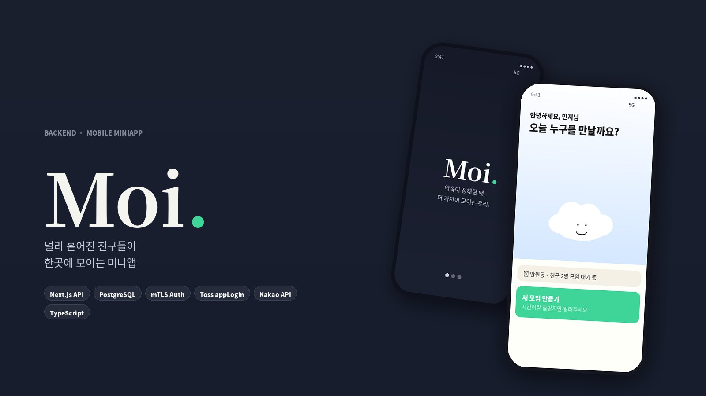

Moi / 토스 미니앱
여러 명의 출발지에서 중간 지점을 찾아 만날 장소를 정하고, 일정을 잡고, 캘린더에 등록까지 한 번에 끝내는 Toss 인앱 웹뷰 서비스입니다. "강남에서 만날까 홍대에서 만날까" 30분째 핑퐁하는 단톡방을 3분 안에 정리하는 것이 목표입니다.
담당 영역
- Next.js API Routes 기반 백엔드 API 설계 및 구현
- Toss
appLogin인증 흐름 구현 (authorizationCode → AccessToken 교환 →loginMe사용자 정보 획득) - mTLS 클라이언트 인증서 기반 Toss 서버 연동
- 모임/참여자/일정 도메인 DB 스키마 설계 (PostgreSQL + 7일 TTL)
- 카카오 로컬 API 연동을 통한 주소 → 좌표 변환 및 중간 지점 계산
기술적 포인트
- 인증 보안 · 개인정보 암호화 전달 + 서버 복호화, AccessToken / RefreshToken 만료 처리
- 외부 API 통합 · Toss SDK, 카카오맵, Google Calendar 딥링크를 하나의 흐름으로 묶음
- 임시 데이터 관리 · 모임 데이터에 TTL을 두어 개인정보(출발지) 보관 기간 최소화

Next.js API
TypeScript
PostgreSQL
mTLS Auth
Toss appLogin
Kakao API